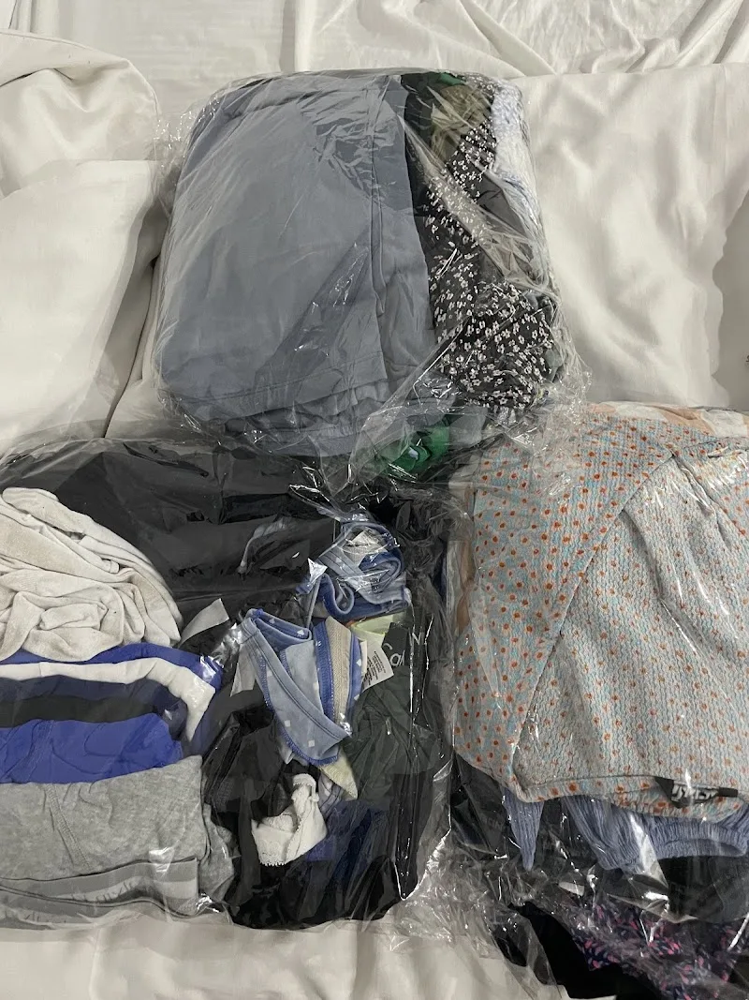

Wash & Fold
Clean, dry and neatly folded.
NEAR RML HOSPITAL, NEW DELHI
Book a pickup, check your order and see when your clothes will be ready.

Clean, dry and neatly folded.
Fresh clothes, ready to wear.
Care for your special clothes.
A fresh start for your shoes.
Hotel and bulk laundry also available. Prices and delivery time are confirmed after checking the items.
SIMPLE FROM START TO FINISH
Choose your service and time.
See washing, ironing and ready updates.
Check the expected delivery and bill.
YOUR LOCAL LAUNDRY
Shop 17, No. 5 Dhobi Ghat, Pandit Pant Marg,
near RML Hospital, New Delhi 110001.
Listed as open 24 hours. Please confirm pickup times with the shop.
Email: mk700002@gmail.com

MANOJ KR LAUNDRY · DEMO